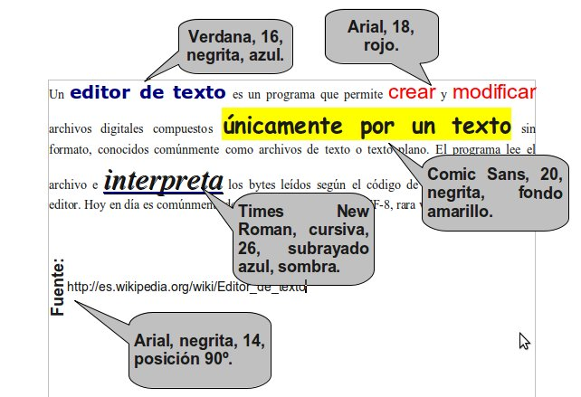
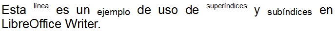
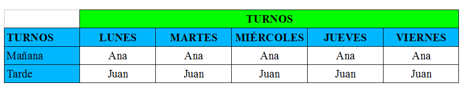
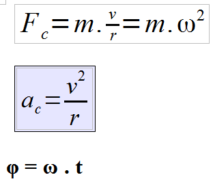

2. Ejercicios de Writer¶
Esta sección consta de 30 ejercicios en los que aplicaremos varios de los contenidos tratados en las prácticas guiadas.
Crea en el ordenador una carpeta con tu nombre en la que guardaremos los documentos generados.
Índice de contenidos:
- Ejercicio 1: Formato de archivo
- Ejercicio 2: Formato de texto
- Ejercicio 3: Subíndices y superíndices
- Ejercicio 4: Formato de párrafo
- Ejercicio 5: Comentarios
- Ejercicio 6: Formato de página y formas
- Ejercicio 7: Corrector
- Ejercicio 8: Columnas
- Ejercicio 9: Pegado especial
- Ejercicio 10: Imágenes e hiperenlaces
- Ejercicio 11: Curriculum
- Ejercicio 12: Encabezado y pie de página
- Ejercicio 13: Notas al pie y al final
- Ejercicio 14: Tabuladores
- Ejercicio 15: Buscar y reemplazar
- Ejercicio 16: Numeración y viñetas
- Ejercicio 17: Tablas
- Ejercicio 18: Tablas (II)
- Ejercicio 19: Filtros de imagen
- Ejercicio 20: Secciones
- Ejercicio 21: Índice
- Ejercicio 22: Portada
- Ejercicio 23: Convertir tabla en texto
- Ejercicio 24: Proteger un documento
- Ejercicio 25: Formulario
- Ejercicio 26: Formulario (II)
- Ejercicio 27: Formulario (III)
- Ejercicio 28: Caracteres especiales y fórmulas
- Ejercicio 29: Combinar correspondencia
- Ejercicio 30: Combinar correspondencia (II)
- Créditos
Ejercicio 1: Formato de archivo¶
Abre el archivo Ejercicio_01.odt y guárdalo en formato .DOC, .DOCX y expórtalo en formato .PDF de modo que obtengas los siguientes archivos:
- Ejercicio_01_NombreAlumno.doc
- Ejercicio_01_NombreAlumno.docx
- Ejercicio_01_NombreAlumno.pdf
Ejercicio 2: Formato de texto¶
Abre el archivo Ejercicio_01.odt y modifica el formato del texto tal y como observas en la imagen.
Guarda el archivo resultante como "Ejercicio_02_NombreAlumno.odt".

Ejercicio 3: Subíndices y superíndices¶
En un nuevo documento escribe el siguiente texto en formato Arial, tamaño 16. Dale a los subíndices un tamaño relativo del 75% y a los superíndices del 58%.
Guarda el archivo resultante como "Ejercicio_03_NombreAlumno.odt".

Ejercicio 4: Formato de párrafo¶
El archivo Ejercicio_04.odt contiene cuatro párrafos. Dale a cada párrafo el formato indicado en su enunciado.
Necesitarás usar también la imagen Ejercicio_04.jpg
Guarda el archivo resultante como "Ejercicio_04_NombreAlumno.odt".
Ejercicio 5: Comentarios¶
Abre el documento que creaste en el ejercicio anterior "Ejercicio_04_NombreAlumno.odt" y añade los siguientes comentarios:
- En el párrafo 1: "Cambiar la fuente Arial por Verdana".
- En el párrafo 2: "Debe eliminarse esta imagen de fondo y poner un color".
Guarda el archivo resultante como "Ejercicio_05_NombreAlumno.odt".
Ejercicio 6: Formato de página y formas¶
Abre un documento nuevo, dale tamaño A4 y orientación horizontal. Ponle bordes y un color de fondo a la página (usa los valores que quieras).
Introduce cinco formas de la barra de herramientas de dibujo de distintas categorías. Dales distintos formatos a las formas (relleno, línea, extrusión, ...) y en una de ellas escribe tu nombre y apellidos.
Guarda el archivo resultante como "Ejercicio_06_NombreAlumno.odt".
Ejercicio 7: Corrector¶
En el documento Ejercicio_07.odt hay tres errores ortográficos. Usa la herramienta de ortografía y gramática para corregirlos.
Selecciona las palabras corregidas y cambia su formato a negrita tamaño 14.
Guarda el archivo resultante como "Ejercicio_07_NombreAlumno.odt".
Ejercicio 8: Columnas¶
Abre el archivo corregido del ejercicio anterior. Distribuye su texto en columnas con las siguientes características:
- Primer párrafo: Dos columnas de igual ancho, espaciadas 1 cm con una línea de separación de 1 punto de ancho y color verde.
- Segundo párrafo: Dos columnas, la de la izquierda de 5 cm de ancho y la de la derecha de 11,50 cm con un espacio entre ellas de 0,50 cm.
- Tercer párrafo: Tres columnas de igual ancho con un espacio entre ellas de 0,30 cm.
Guarda el archivo resultante como "Ejercicio_08_NombreAlumno.odt".
Ejercicio 9: Pegado especial¶
Busca información en Wikipedia sobre un escritor o escritora que te guste. Usando el "pegado especial" copia parte del contenido de la Wikipedia en un nuevo documento de texto, sin que se copien los hiperenlaces ni el formato original.
Guarda el archivo resultante como "Ejercicio_09_NombreAlumno.odt".
Ejercicio 10: Imágenes e hiperenlaces¶
Abre el documento de texto del ejercicio anterior. Pega en él la fotografía del escritor o escritora que has buscado en Wikipedia y sitúala en la esquina superior derecha de la primera página.
Al final del documento introduce una forma "flecha hacia la derecha" de la barra de herramientas de dibujo e introduce en ella un hiperenlace a la página web de la que has obtenido la información.
Guarda el archivo resultante como "Ejercicio_10_NombreAlumno.odt".
Ejercicio 11: Curriculum¶
Te han encargado redactar el currículum de una persona.
Sus datos son:

Inserta la imagen Ejercicio_11.jpg en el currículum.
El diseño será libre. Usa los formatos de texto y de párrafo que desees.
Guarda el archivo resultante como "Ejercicio_11_NombreAlumno.odt".
Ejercicio 12: Encabezado y pie de página¶
Abre el documento de texto Ejercicio_12.odt. Inserta en todas sus páginas el siguiente encabezado: "Preámbulo de la Ley Orgánica 2/2006, de 3 de Mayo, de Educación".
Cambia el formato de este encabezado a Arial, tamaño 9, estilo cursiva y alineación derecha.
Inserta en el pie de página "Página X de Y" donde X será el campo "número de página" e Y será el campo "total de páginas".
Guarda el archivo resultante como "Ejercicio_12_NombreAlumno.odt".
Ejercicio 13: Notas al pie y al final¶
Abre el documento que creaste en el ejercicio anterior.
Al final del primer párrafo escribe la siguiente nota a pie de página: "BOE 04 de Mayo de 2006".
Al final del segundo párrafo escribe la siguiente nota a pie de página: "Puedes acceder al BOE clicando aquí". En la palabra "aquí" inserta un hiperenlace a la página web: "www.boe.es".
Guarda el archivo resultante como "Ejercicio_13_NombreAlumno.odt".
Ejercicio 14: Tabuladores¶
En un nuevo documento crea tabuladores en las posiciones:
- 1 cm
- 5 cm
- 12 cm
- 20 cm
Con el contenido alineado a la izquierda.
Pulsando la tecla TAB introduce los siguientes campos:
- NOMBRE
- LOCALIDAD
- EDAD
Debajo modifica los tabuladores para que estén separados por puntitos.
Escribe los datos inventados de cinco personas.
Guarda el archivo resultante como "Ejercicio_14_NombreAlumno.odt".
Ejercicio 15: Buscar y reemplazar¶
Abre el documento Ejercicio_15.odt.
Con la herramienta "buscar y reemplazar" busca todos los términos "Galicia" del documento y sustituye su formato actual por el siguiente:
- Fuente: Arial
- Tamaño: 16
- Estilo: Negrita
- Color: Azul
Guarda el archivo resultante como "Ejercicio_15_NombreAlumno.odt".
Ejercicio 16: Numeración y viñetas¶
Escribe el nombre de las cuatro provincias gallegas en un nuevo documento.
Copia y pega debajo dos veces esa lista y usa la herramienta "Numeración y viñetas" para obtener un resultado como el de la siguiente imagen:

Guarda el archivo resultante como "Ejercicio_16_NombreAlumno.odt".
Ejercicio 17: Tablas¶
Crea una tabla como la de la siguiente imagen en un nuevo documento. Puedes usar otros formatos de texto y colores de fondo.

Guarda el archivo resultante como "Ejercicio_17_NombreAlumno.odt".
Ejercicio 18: Tablas (II)¶
Crea una tabla con tu horario de clase en un nuevo documento. Usa los formatos que desees.
Guarda el archivo resultante como "Ejercicio_18_NombreAlumno.odt".
Ejercicio 19: Filtros de imagen¶
Crea una tabla de dos filas y dos columnas. En cada una de las celdas inserta la imagen Ejercicio_04.jpg.
Céntralas horizontal y verticalmente y aplícale a cada una un filtro distinto.
Guarda el archivo resultante como "Ejercicio_19_NombreAlumno.odt".
Ejercicio 20: Secciones¶
Abre el documento Ejercicio_20.odt.
El documento está compuesto por seis apartados. Inserta saltos de página de modo que cada apartado ocupe solo una página.
A continuación inserta seis secciones y a cada una aplícale un formato de página (orientación, color de fondo, bordes, etc.) distinto del resto.
Guarda el archivo resultante como "Ejercicio_20_NombreAlumno.odt".
Ejercicio 21: Índice¶
Abre el archivo "Ejercicio_20_NombreAlumno.odt" que creaste en el ejercicio anterior y añade un índice de los apartados del documento.
Guarda el archivo resultante como "Ejercicio_21_NombreAlumno.odt".
Ejercicio 22: Portada¶
Abre el archivo "Ejercicio_21_NombreAlumno.odt" que creaste en el ejercicio anterior e introduce una portada. En ella inserta un "Fontwork" con el texto: "Periféricos del ordenador". Añade también tu nombre y apellidos.
Guarda el archivo resultante como "Ejercicio_22_NombreAlumno.odt".
Ejercicio 23: Convertir tabla en texto¶
Abre el documento Ejercicio_23.odt.
Convierte la tabla en un texto usando el punto y coma como separador.
Guarda el archivo resultante como "Ejercicio_23_NombreAlumno.odt".
Ejercicio 24: Proteger un documento¶
Abre el archivo "Ejercicio_23_NombreAlumno.odt" que creaste en el ejercicio anterior.
Guárdalo como "Ejercicio_24_NombreAlumno.odt" protegido con la contraseña 12345.
Ejercicio 25: Formulario¶
Imagina que un equipo deportivo de tu localidad (fútbol, baloncesto, ...) te encarga diseñar un formulario para recoger los datos de los nuevos socios.
Crea un formulario que incluya una imagen del escudo del equipo y varios campos con los datos personales de los socios (nombre, apellidos, domicilio, teléfono, etc.).
Introduce tres botones de opción para el pago de la cuota:
- Mensual
- Trimestral
- Anual
Los socios solo podrán marcar una de las tres opciones.
Guarda el archivo resultante como "Ejercicio_25_NombreAlumno.odt".
Ejercicio 26: Formulario (II)¶
Abre el archivo "Ejercicio_25_NombreAlumno.odt" que creaste en el ejercicio anterior.
Protege con la contraseña 12345 todas las partes del formulario salvo los campos que deben ser cubiertos por los socios.
Guarda el archivo resultante como "Ejercicio_26_NombreAlumno.odt".
Ejercicio 27: Formulario (III)¶
Abre el archivo "Ejercicio_26_NombreAlumno.odt" que creaste en el ejercicio anterior.
Genera un PDF para que los socios puedan rellenarlo e imprimirlo.
Guarda el archivo resultante como "Ejercicio_27_NombreAlumno.pdf".
Ejercicio 28: Caracteres especiales y fórmulas¶
Insertando caracteres especiales y usando el asistente de fórmulas escribe en un nuevo documento las siguientes fórmulas:

Guarda el archivo resultante como "Ejercicio_28_NombreAlumno.odt".
Ejercicio 29: Combinar correspondencia¶
Crea un documento de texto que contenga una carta similar a la de la siguiente imagen, dirigida a todos los clientes que figuran en la hoja de cálculo Ejercicio_29.ods.
Usa los formatos de Fontwork, texto, párrafo y página que quieras.

Guarda el archivo resultante como "Ejercicio_29_NombreAlumno.odt".
Ejercicio 30: Combinar correspondencia (II)¶
Crea un documento de texto que contenga la misma carta que en el ejercicio anterior, pero dirigida solo a los clientes de la provincia de Pontevedra.
Guarda el archivo resultante como "Ejercicio_30_NombreAlumno.odt".
Créditos¶
Autor de los ejercicios originales: José Manuel Blanco Guimarey
Licencia: Creative Commons BY-NC-SA
Fuente: Ejercicios propuestos
Créditos del tutorial: Créditos